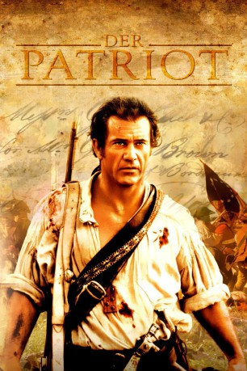

#66 Der Patriot
Alternativ: The Patriot
Auszeichnungen: für 3 Oscars nominiert
 
 IMDB-Wertung: 7.2 / 10
IMDB-Wertung: 7.2 / 10  Metascore: 63
Metascore: 63 
Ende des 18. Jahrhunderts, South Carolina, USA. Benjamin Martin hat sich zurückgezogen und kümmert sich nach den Tagen als Kriegsheld nur noch um sein Gut und seine Familie. Die Engländer dringen als Kolonialmacht vor und gefährden seinen Besitz, sein ältester Sohn stirbt und sein Haus wird niedergerissen. Martin möchte jedoch nur Frieden, erkennt aber relativ schnell, dass er seine Existenz samt Familie nur dann beschützen kann, wenn er gegen die Engländer zu den Waffen greift...
Jahr: 2000
Dauer: 165 Minuten
FSK: 16
Land: USA Studio: Columbia PicturesTonspuren:
Untertitel:
Auflösung: 1080p (1920×800) Größe: 13414 MB
Genre: Action, Drama, Geschichte, Krieg
Regisseur:  Roland Emmerich
Roland Emmerich
Drehbuch: Robert Rodat
Soundtrack: John Williams
Darsteller:
 Mel Gibson als Benjamin Martin
Mel Gibson als Benjamin Martin Heath Ledger als Gabriel Martin
Heath Ledger als Gabriel Martin Joely Richardson als Charlotte Selton
Joely Richardson als Charlotte Selton Jason Isaacs als Col. William Tavington
Jason Isaacs als Col. William Tavington Chris Cooper als Col. Harry Burwell
Chris Cooper als Col. Harry Burwell Tchéky Karyo als Jean Villeneuve
Tchéky Karyo als Jean Villeneuve Rene Auberjonois als Reverend Oliver
Rene Auberjonois als Reverend Oliver- Lisa Brenner als Anne Howard
 Tom Wilkinson als Gen. Lord Charles Cornwallis
Tom Wilkinson als Gen. Lord Charles Cornwallis Donal Logue als Dan Scott
Donal Logue als Dan Scott Leon Rippy als John Billings
Leon Rippy als John Billings Adam Baldwin als Capt. Wilkins
Adam Baldwin als Capt. Wilkins- Jay Arlen Jones als Occam
- Joey D. Vieira als Peter Howard
 Gregory Smith als Thomas Martin
Gregory Smith als Thomas Martin Mika Boorem als Margaret Martin
Mika Boorem als Margaret Martin Skye McCole Bartusiak als Susan Martin
Skye McCole Bartusiak als Susan Martin Trevor Morgan als Nathan Martin
Trevor Morgan als Nathan Martin- Bryan Chafin als Samuel Martin
 Logan Lerman als William Martin
Logan Lerman als William Martin Mary Jo Deschanel als Mrs. Howard
Mary Jo Deschanel als Mrs. Howard- Peter Woodward als Charles O'Hara
- Shan Omar Huey als Joshua
 Kirk Fox als Skunk
Kirk Fox als Skunk- Shannon Eubanks als Mrs. Simms
 Charles Black als Matthew
Charles Black als Matthew Andy Stahl als Gen. Nathanel Greene
Andy Stahl als Gen. Nathanel Greene- Kristian Truelsen als Hardwick
 Kanin Howell als Postrider
Kanin Howell als Postrider Mark Jeffrey Miller als Wounded Continental
Mark Jeffrey Miller als Wounded Continental Zach Hanner als British Field Officer
Zach Hanner als British Field Officer- Dara Coleman als Redcoat Sergeant #2
 John Storey als Cowpens Militiaman
John Storey als Cowpens Militiaman- John Curran als Redcoat Sergeant #1
 Roy McCrerey als Redcoat
Roy McCrerey als Redcoat- Patrick Tatopoulos als French Naval Officer
- Brad Batchelor als Cavalry Officer , uncredited
- Michael Mario Good als Redcoat / Charlotte's Servant , uncredited
- Kevin R. Hershberger als Martin's Militiaman , uncredited
- Eric Holloway als Townsman , uncredited
- Patric Johnstone als Green Dragoon Cavalryman , uncredited
- Patrick G. Keenan als British Solidier , uncredited
- David Lowe als British Infantryman / Continental infantlryman / Continental Militiaman , uncredited
- John Neely als Member of Martin's Militia , uncredited
- William Palko als Redcoat Private , uncredited
- Bert Puckett als Continental Lieutenant , uncredited
 Duncan B. Putney als American Officer , uncredited
Duncan B. Putney als American Officer , uncredited- Scott C. Reynolds als Martin's Militiaman , uncredited
- David Rotan als British Field Musician , uncredited
- Wayne Shannon als Core Militia , uncredited
Datei: X:\2000\Patriot, Der (2000, FSK16, 1920x800).mkv seit 02.02.2015
Festplatte: HD 1996-2002
 Es gibt insgesamt 82 Filme in der Gruppe '2000'
Es gibt insgesamt 82 Filme in der Gruppe '2000'